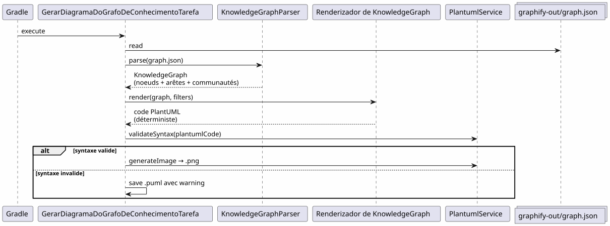
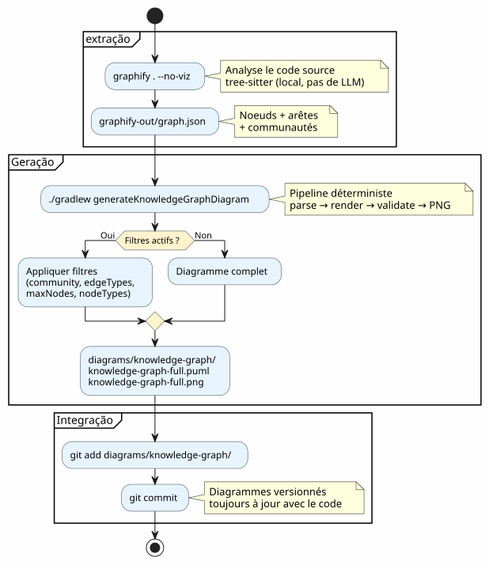
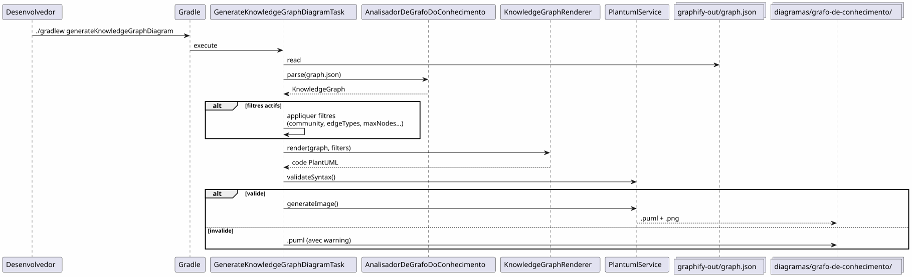

Integrar Graphify em um fluxo de trabalho Gradle: do Knowledge Graph ao diagrama PlantUML em um único comando
Publié le 19 April 2026
- O problema: diagramas sempre atrasados em relação ao código
- A solução : um pipeline determinístico Grafo de Conhecimento → PlantUML
- Passo 1: Instalar Graphify e extrair o Knowledge Graph
- Etapa 2 : O plugin Gradle transforma o Knowledge Graph em PlantUML
- Passo 3: Uso diário
- O pipeline completo em um fluxo de trabalho Gradle
- O dogfooding : o plugin se documenta sozinho
- Por que isso é determinístico (e por que isso importa)
- Diagramas do próprio pipeline
- Integração na governança do projeto
- Configuração: lista de verificação em 5 minutos
- Armadilhas e mitigações
- O que se obtém no final
- Links
Seu codebase está crescendo. As dependências entre módulos estão se multiplicando. A documentação de arquitetura torna-se obsoleta antes mesmo de ser escrita. E se o seu build Gradle pudesse automaticamente gerar diagramas atualizados a partir da estrutura real do código? É exatamente isso que o pipeline Graphify + PlantUML Gradle Plugin faz:`graphify . --no-viz`extrai o Knowledge Graph`./gradlew generateKnowledgeGraphDiagram`o transforma em diagramas PlantUML. Zero LLM, zero manual, 100% determinístico.
- toc
-
[]
O problema: diagramas sempre atrasados em relação ao código
Todo projeto que ultrapassa algumas milhares de linhas conhece esse síndrome :
-
Desenha-se um diagrama de arquitetura no início do projeto
-
O código evolui, as dependências mudam
-
O diagrama torna-se uma mentira decorativa
-
Ninguém o atualiza porque é penoso
-
Os recém-chegados baseiam-se nisso e cometem erros.

A questão não é precisa de diagramas ? — todo mundo sabe que sim. A questão é :quem os mantém atualizados?
A resposta: ninguém. Exceto se for automático.
A solução : um pipeline determinístico Grafo de Conhecimento → PlantUML
O princípio é simples: em vez de desenhar os diagramas à mão, nós osgerado a partir da estrutura real do código.
Failed to generate image: PlantUML preprocessing failed: [From <input> (line 6) ] @startuml skinparam backgroundColor #FEFEFE skinparam componentStyle rectangle actor Développeur component "Graphify ^^^^^ Syntax Error? (Assumed diagram type: sequence) @startuml skinparam backgroundColor #FEFEFE skinparam componentStyle rectangle actor Développeur component "Graphify (pip install graphifyy)" as Graphify collections "graphify-out/graph.json (Grafo de Conhecimento)" as KGJSON component "PlantUML Gradle Plugin\n(generateKnowledgeGraphDiagram)" as Plugin component "KnowledgeGraphParser" as Parser component "Renderizador de Grafo de Conhecimento" as Renderer component "PlantumlService (validação + renderização PNG)" as PS collections "diagrams/knowledge-graph/\n(.puml + .png)" as Output Développeur --> Graphify : graphify . --no-viz Graphify --> KGJSON : extrait la structure\ndu code source Développeur --> Plugin : ./gradlew generateKnowledgeGraphDiagram Plugin --> Parser : parse(graph.json) Parser --> Plugin : KnowledgeGraph\n(noeuds + arêtes + communautés) Plugin --> Renderer : render(graph, filters) Renderer --> Plugin : code PlantUML\ndéterministe Plugin --> PS : validateSyntax + generateImage PS --> Output : .puml + .png note bottom of Plugin Pipeline DÉTERMINISTE Aucun appel LLM Résultat reproductible end note @enduml
Dois comandos. É só isso.
# Étape 1 : extraire le Knowledge Graph
graphify . --no-viz
# Étape 2 : générer les diagrammes PlantUML
./gradlew generateKnowledgeGraphDiagramO resultado? Arquivos`.puml` et .png`em`diagrams/knowledge-graph/, versionados no Git, sempre atualizados com o código.
Passo 1: Instalar Graphify e extrair o Knowledge Graph
Instalação
Graphify é uma ferramenta Python que analisa seu codebase e constrói um grafo de conhecimento estruturado :
# Méthode recommandée
uv tool install graphifyy && graphify install --platform opencode
# Alternative avec pip
pip install graphifyy && graphify install --platform opencodeConfigurar as exclusões
Criar um arquivo`.graphifyignore`na raiz do projeto para excluir os arquivos que não fazem parte da lógica de negócio:
# Secrets — JAMAIS dans le graphe
*-context.yml
*.env
# Fichiers générés
build/
.gradle/
# Tests fonctionnels
src/functionalTest/Extrair o Knowledge Graph
graphify . --no-vizA flag`--no-viz`Pula a geração HTML (inutil em um pipeline Gradle). O resultado é um arquivo`graphify-out/graph.json`contendo :
-
Nós: classes, funções, ficheiros — com o seu tipo e comunidade
-
arestas: relações entre nós (EXTRACTED a partir do código, INFERRED pelo LLM)
-
Comunidades: agrupamentos automáticos de nós ligados
{
"nodes": [
{"id": "0", "label": "LlmService", "file_type": "code", "community": 0},
{"id": "1", "label": "ApiKeyPool", "file_type": "code", "community": 0},
{"id": "2", "label": "PlantumlService", "file_type": "code", "community": 1}
],
"links": [
{"source": "1", "target": "0", "relation": "uses", "confidence": "EXTRACTED", "weight": 0.9},
{"source": "0", "target": "2", "relation": "calls", "confidence": "INFERRED", "weight": 0.7}
]
}|
O código fonte ( |
Etapa 2 : O plugin Gradle transforma o Knowledge Graph em PlantUML
Arquitetura do pipeline
O plugin`com.cheroliv.plantuml`inclui uma tarefa`generateKnowledgeGraphDiagram`que transforma`graph.json`em diagramas PlantUML de maneiratotalmente determinista:

Os componentes internos
| Componente | Papel |
|---|---|
|
Analisar`graph.json`suporta 3 formatos: graphify nativo ( |
|
Transforma um de forma determinista`KnowledgeGraph`em código PlantUML. Grupos por tipo, comunidades em pacotes, legenda automática. |
|
Tarefa Gradle que orquestra: parse → render → validate → PNG. Configurável via propriedades do Gradle. |
|
Modelos de dados :`KnowledgeGraph`, |
|
Validação sintática + renderização PNG (reutilizado por todas as tarefas do plugin). |
Regras de renderização
O renderer aplica convenções visuais determinísticas:
| Tipo de aresta | Notação PlantUML | Significado |
|---|---|---|
extraído |
|
Relação extraída do código fonte (certeza) |
deduzido |
|
Relação inferida pelo LLM (pontuação de confiança) |
AMBÍGUO |
|
relação ambígua (a verificar) |
As comunidades são renderizadas como pacotes PlantUML com uma paleta de cores automática.
Passo 3: Uso diário
diagrama completo
# Générer le diagramme du Knowledge Graph complet
./gradlew generateKnowledgeGraphDiagramSaída :`diagrams/knowledge-graph/knowledge-graph-full.puml`+.png
Filtrar por comunidade
# Une seule communauté
./gradlew generateKnowledgeGraphDiagram \
-Pplantuml.kg.community=community_0
# Limiter le nombre de noeuds (lisibilité)
./gradlew generateKnowledgeGraphDiagram \
-Pplantuml.kg.community=community_0 \
-Pplantuml.kg.maxNodes=15Filtrar por tipo de aresta
# Uniquement les relations certaines (EXTRACTED)
./gradlew generateKnowledgeGraphDiagram \
-Pplantuml.kg.edgeTypes=EXTRACTED
# Relations certaines + inférées
./gradlew generateKnowledgeGraphDiagram \
-Pplantuml.kg.edgeTypes=EXTRACTED,INFERREDFiltrar por tipo de nó e confiança
# Uniquement les classes de code
./gradlew generateKnowledgeGraphDiagram \
-Pplantuml.kg.nodeTypes=code
# Seuil de confiance minimum (pour les INFERRED)
./gradlew generateKnowledgeGraphDiagram \
-Pplantuml.kg.minConfidence=0.7Diretório de saída personalizado
./gradlew generateKnowledgeGraphDiagram \
-Pplantuml.kg.outputDir=docs/architectureReferência completa das propriedades
| Propriedade | defeito | Descrição |
|---|---|---|
|
(todas) |
Filtrar comunidades por nome (correspondência de substring) |
|
(todos) |
Tipos de arestas separados por vírgulas :`EXTRACTED`, |
|
|
Limite mínima de confiança para as arestas |
|
(ilimitado) |
Número máximo de nós para exibir |
|
(todos) |
Tipos de nós separados por vírgulas (ex. |
|
|
Diretório de saída para os arquivos`.puml` et |
O pipeline completo em um fluxo de trabalho Gradle
tipo de workflow

Integração no ciclo de desenvolvimento
O pipeline se integra naturalmente nas etapas-chave do desenvolvimento:
Failed to generate image: PlantUML preprocessing failed: [From <input> (line 5) ] @startuml skinparam backgroundColor #FEFEFE state "Desenvolvimento" as dev state "Extração ^^^^^ Syntax Error? (Assumed diagram type: state) @startuml skinparam backgroundColor #FEFEFE state "Desenvolvimento" as dev state "Extração graphify . --no-viz" as extract state "Geração ./gradlew generateKnowledgeGraphDiagram" as generate state "Commit diagramas versionados" as commit [*] --> dev dev --> extract : Code modifié extract --> generate : graph.json à jour generate --> commit : .puml + .png générés commit --> dev : Diagrammes dans le repo note right of extract Quasi instantané sur du code Kotlin (tree-sitter, pas de LLM) end note note right of generate Déterministe Pas de LLM Résultat reproductible end note @enduml
Atualização incremental
Quando o código muda, não reconstruímos todo o grafo do zero :
# Mise à jour incrémentale (fichiers modifiés uniquement)
graphify . --update
# Puis régénérer les diagrammes
./gradlew generateKnowledgeGraphDiagram|
|
O dogfooding : o plugin se documenta sozinho
O plugin PlantUML existe para transformar prompts em diagramas. Ele também pode transformar o Knowledge Graph da sua própria codebase em diagramas de documentação. Isso é dogfooding : o plugin consome seu próprio serviço.
Failed to generate image: PlantUML preprocessing failed: [From <input> (line 16) ]
@startuml
skinparam backgroundColor #FEFEFE
skinparam componentStyle rectangle
package "Pipeline normal\n(usuário → diagramas)" as normal {
[Fichier .prompt] as prompt
[LlmService\n+ ApiKeyPool] as llm1
[ProcessPlantumlPromptsTask] as task1
[Diagramme PNG] as out1
prompt --> task1
task1 --> llm1
llm1 --> out1
}
package "Pipeline Knowledge Graph
^^^^^
Syntax Error? (Assumed diagram type: component)
@startuml
skinparam backgroundColor #FEFEFE
skinparam componentStyle rectangle
package "Pipeline normal\n(usuário → diagramas)" as normal {
[Fichier .prompt] as prompt
[LlmService\n+ ApiKeyPool] as llm1
[ProcessPlantumlPromptsTask] as task1
[Diagramme PNG] as out1
prompt --> task1
task1 --> llm1
llm1 --> out1
}
package "Pipeline Knowledge Graph
(determinístico, sem LLM)" as kg {
[graphify-out/graph.json] as kgjson
[KnowledgeGraphParser] as parser
[KnowledgeGraphRenderer] as renderer
[PlantumlService] as ps
[Diagramme PNG\n(documentation du plugin)] as out2
kgjson --> parser
parser --> renderer
renderer --> ps
ps --> out2
}
package "Pipeline Dogfooding
(LLM → documentação do plugin)" as dogfood {
[GraphifyPromptAdapter] as gpa
[Fichiers .prompt\nauto-générés] as auto_prompt
[LlmService\n+ ApiKeyPool] as llm2
[ProcessPlantumlPromptsTask] as task2
[Diagramme PNG\n(documentation LLM)] as out3
kgjson --> gpa
gpa --> auto_prompt
auto_prompt --> task2
task2 --> llm2
llm2 --> out3
}
note "Mesmo LlmService, mesmo ApiKeyPool,
mesmo PlantumlService
— ZERO duplicação" as N
@enduml
Tarefas do Gradle associadas:
| Tarefa | LLM ? | Descrição |
|---|---|---|
|
Não |
Transforme`graph.json`em PlantUML (determinístico) |
|
Sim |
Gere alguns`.prompt`desde o grafo, ele os trata via LLM (dogfooding) |
# Documentation déterministe (rapide, pas de LLM)
./gradlew generateKnowledgeGraphDiagram
# Documentation LLM (plus riche, consomme des tokens)
./gradlew generateDiagramDocsPor que isso é determinístico (e por que isso importa)
O ponto-chave do pipeline`generateKnowledgeGraphDiagram`:Ele não chama nenhum LLM. A transformação`graph.json`PlantUML é uma função pura.
Failed to generate image: PlantUML preprocessing failed: [From <input> (line 6) ]
@startuml
skinparam backgroundColor #FEFEFE
skinparam componentStyle rectangle
rectangle "Pipeline determinístico
(generateKnowledgeGraphDiagram)" as det {
^^^^^
Syntax Error? (Assumed diagram type: activity)
@startuml
skinparam backgroundColor #FEFEFE
skinparam componentStyle rectangle
rectangle "Pipeline determinístico
(generateKnowledgeGraphDiagram)" as det {
[graph.json] as json
[KnowledgeGraphParser] as parser
[KnowledgeGraphRenderer] as renderer
[PlantUML code] as puml
json --> parser : parse
parser --> renderer : KnowledgeGraph
renderer --> puml : render (fonction pure)
}
rectangle "Pipeline LLM\n(processPlantumlPrompts)" as llm {
[.prompt] as prompt
[LlmService] as llmSvc
[ChatModel] as model
[PlantUML code] as puml2
prompt --> llmSvc
llmSvc --> model : API call
model --> puml2 : réponse non-déterministe
}
note bottom of det
Même entrée → même sortie
Pas de latence réseau
Pas de coût en tokens
Reproductible en CI
end note
note bottom of llm
Même entrée → sortie variable
Latence réseau (1-5s)
Coût en tokens
Nécessite une clave API
end note
@enduml
Os benefícios concretos :
| Vantagem | Impacto |
|---|---|
Reprodutibilidade |
Mesmo`graph.json`→ mesmo diagrama. Exatamente. Todas as vezes. |
Custo zero |
Sem chamada LLM = sem tokens = sem fatura da API. |
Zero latência |
Parse + render demora ~100ms, não 1-5 segundos. |
Compatível CI |
Nenhuma chave de API necessária. Nenhum teste flaky devido a uma resposta LLM variável. |
versionável |
Le |
Diagramas do próprio pipeline
Para fechar o laço, eis o diagrama do pipeline tal como seria gerado pelo plugin :

Integração na governança do projeto
Em nosso projeto, este pipeline se integra em uma estratégia de gestão de contexto EAGER/LAZY para o agente IA. O Knowledge Graph substitui a documentação de arquitetura manual por um grafo estruturado, consultável e autoatualizado.
Failed to generate image: PlantUML preprocessing failed: [From <input> (line 6) ]
@startuml
skinparam backgroundColor #FEFEFE
skinparam componentStyle rectangle
package "EAGER
(sempre carregado)" as eager {
^^^^^
Syntax Error? (Assumed diagram type: activity)
@startuml
skinparam backgroundColor #FEFEFE
skinparam componentStyle rectangle
package "EAGER
(sempre carregado)" as eager {
[PROMPT_REPRISE.adoc\n(contexte session)] as pr
[INDEX.adoc\n(vue d'ensemble)] as idx
[GRAPH_REPORT.adoc\n(~50 lignes)] as gr
}
package "LAZY — Estratégia\n(sob demanda)" as lazy_strat {
[Méthodologies] as meth
[Archives sessions] as sessions
}
package "LAZY — Graphify
(consultas direcionadas)" as lazy_graph {
[graph.json] as gj
[Queries\n(query/path/explain)] as queries
}
package "Pipeline PlantUML
(gerado automaticamente)" as puml {
[generateKnowledgeGraphDiagram] as kgTask
[generateDiagramDocs] as ddTask
[Diagrammes PNG] as diagrams
}
Agent --> eager : Lit en début de session
Agent ..> lazy_strat : Charge si type détecté
Agent ..> lazy_graph : Query si besoin structurel
kgTask --> diagrams : Déterministe
ddTask --> diagrams : Via LLM
note right of gr
Condensé du Knowledge Graph
God nodes + communautés
Remplace ECOSYSTEM_OVERVIEW
(225 lignes → 50 lignes)
end note
@enduml
A união dos dois sistemas é complementar :
-
A estratégia gerencia o QUANDO e o COMO— governança, fluxo de trabalho, arquivamento
-
Graphify trata o QUÊ e o ONDE— estrutura do código, relações, consultas direcionadas
_ A estratégia de sessão trata oquando et le como(governança, workflow, limites), Graphify gerencia oO que et le onde(estrutura do código, relações, consultas direcionadas). O pipeline PlantUML gerencia oCOM O QUE(diagramas determinísticos, versionados, sempre atualizados). _
Configuração: lista de verificação em 5 minutos
| (Note: Since no French text was provided in the user’s input for translation, the output is an empty string as per the instruction to translate only the given fragment.) | etapa | encomenda |
|---|---|---|
1 |
Instalar Graphify |
|
2 |
Configurar as exclusões |
Criar`.graphifyignore` |
3 |
Extrair o Knowledge Graph |
|
4 |
Gerar os diagramas |
|
5 |
Confirmar os resultados |
|
# Script complet en 5 commandes
uv tool install graphifyy
cat > .graphifyignore << 'EOF'
*-context.yml
*.env
build/
.gradle/
EOF
graphify . --no-viz
./gradlew generateKnowledgeGraphDiagram
git add graphify-out/GRAPH_REPORT.adoc graphify-out/graph.json diagrams/knowledge-graph/Armadilhas e mitigações
| Armadilha | Descrição | mitigação |
|---|---|---|
Gráfico muito denso |
Um grande projeto gera centenas de nós ilegíveis |
Usar`-Pplantuml.kg.maxNodes=30`e filtrar por comunidade |
Exclusões demasiado amplas |
Demasiados arquivos em`.graphifyignore`reduz o valor do grafo |
Começar por excluir apenas credentials e build |
Direção das setas |
As arestas INFERRED podem ter uma direção ambígua |
Filtrar por`-Pplantuml.kg.edgeTypes=EXTRACTED`para as relações certas apenas |
Grafo obsoleto |
O código muda mas o grafo não é reconstruído |
Utilizar`graphify . --update`regularmente ou o hook do Git`graphify hook install` |
Custo atualizado |
As atualizações incrementais são quase gratuitas (tree-sitter local) |
Apenas os docs ( |
O que se obtém no final
Failed to generate image: PlantUML preprocessing failed: [From <input> (line 6) ]
@startuml
skinparam backgroundColor #FEFEFE
rectangle "antes" as avant {
card "Diagramas desenhados à mão
Sempre obsoletos
^^^^^
Syntax Error? (Assumed diagram type: activity)
@startuml
skinparam backgroundColor #FEFEFE
rectangle "antes" as avant {
card "Diagramas desenhados à mão
Sempre obsoletos
Ninguém os atualiza" as av1 #FDEDEC
}
rectangle "DEPOIS" as apres {
card "Diagramas gerados automaticamente
Sempre atualizado com o código
Versionados no Git
Determinísticos e reprodutíveis" as ap1 #E8F8E8
}
avant --> apres : graphify . --no-viz\n+ ./gradlew generateKnowledgeGraphDiagram
@enduml
Os benefícios concretos :
| Benefício | Detalhe |
|---|---|
Documentação sempre atualizada |
Os diagramas refletem o código atual, não um snapshot manual |
Zero esforço de manutenção |
Os diagramas se regeneram a cada build |
Redução da dívida técnica |
Não é mais necessário manter os diagramas manualmente |
Contexto visual para os novos |
Um novo desenvolvedor compreende a arquitetura observando os diagramas |
Ajuste fino potencial |
Os pares (subgrafo → diagrama) são exemplos de treinamento de IA |
Validação automática |
`PlantumlService.validateSyntax()`verifica cada diagrama gerado |
Onboarding rápido |
5 diagramas = visão completa da arquitetura |
_ Quem tem um _porquê pode suportar todos os como. __
O porquê : diagramas sempre atualizados. O como : dois comandos em um pipeline Gradle.
Links
-
As super dicas do comando fg— artigo anterior sobre o fluxo de trabalho do terminal